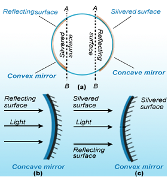
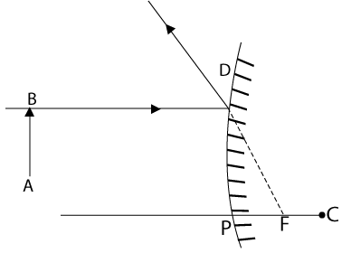

Reflection of light
When light falls on the surface of an object, it may be absorbed, transmitted, or reflected. If an object absorbs all the light which falls on it, then it will appear perfectly black. If an object transmits the light, that is, if the object allows the light to pass through itself, the object is said to be transparent. When light is transmitted (or passes) through a transparent object, it bends somewhat from its original path. And this is called refraction of light. Most of the objects, however, reflect some of the light which falls on their surface. From this it can be concluded that when light falls on the surface of an object, some of it is sent back. The process of sending back the light rays which fall on the surface of an object, is called reflection of light.
Laws of Reflection
-
The angle of incidence and the angle of reflection are equal.
-
The incident ray, the reflected ray and the normal to the surface at the point of incidence are in the same plane.
Characteristics of an image formed by a plane mirror.
-
The image formed in a plane mirror is virtual. It cannot be received on a screen.
-
The image formed in a plane mirror is erect. It is the same side up as the object.
-
The image in a plane mirror is of the same size as the object.
-
The image formed by a plane mirror is at the same distance behind the mirror as the object is in front of the mirror.
-
The image formed in a plane mirror is laterally inverted (or sideways reversed).
First Law of Reflection
In Fig. 31, AO, OB, and ON are in the same plane.
The first law of reflection states that, during reflection, the incident ray, the reflected ray, and the normal drawn to the reflecting surface at the point of incidence, all lie in the same plane.
MM' \Rightarrow Plane reflecting surface
AO \Rightarrow Incident ray
OB \Rightarrow Reflected ray
ON \Rightarrow Normal
O \Rightarrow Point of incidence
\( A \hat{O} N \Rightarrow \) = i = angle of incidence
\( B \hat{O} N \Rightarrow \) = r = angle of reflection
Second Law of Reflection
The second law of reflection states that during reflection, the angle of incidence is equal to the angle of reflection, that is, i = r.
Uses of plane mirrors
-
Plane mirrors are used to see ourselves. The mirrors on our dressing table and in bathrooms are plane mirrors.
-
Plane mirrors are fixed on the inside walls of certain shops (like jewellery shop) to make them look bigger.
-
Plane mirrors are fitted at blind turns of some busy roads so that drivers can see the vehicles coming from the other side and prevent accidents.
-
Plane mirrors are used in making periscopes.
Spherical Mirrors
A spherical mirror is that mirror whose reflecting surface is the part of a hollow sphere of a glass.
Aperture
The surface of the mirror from which reflection can take place is called its aperture. Generally the aperture of the mirror is assumed as small.
Pole
The geometric centre of the spherical surface of a mirror is called the pole of the mirror. It is the midpoint of the aperture of the mirror It is denoted by the symbol P.
Centre of curvature and radius of curvature
The centre of the sphere of which the spherical mirror is a part is called the centre of curvature of the mirror. The radius of this sphere is called the radius of curvature of the mirror.
Principal axis
The line joining the pole and the centre of curvature is called the principal axis of the mirror.
Focus and focal length
The point on the principal axis where rays incident parallel to the principal axis con-verge to reappear or to diverge from after reflection is called the focus of the spherical mirror. The distance of the focus from the pole is called the focal length of the spherical mirror.
Real and virtual images
An image formed by the actual intersection of light rays is called a real image. A real image can be formed on a screen. If the rays of light responsible for an image do not actually intersect, the image is called a virtual image. A virtual image cannot be formed on a screen, as no light reaches where the image appears to form.
Concave mirror
A concave mirror is made by silvering the outer or bulging surface, such that the reflection takes place from the hollow or concave surface, as shown in Fig. 32 b.

Rules for Obtaining Images Formed by Concave Mirrors
-
A ray of light which is parallel to the principal axis of a concave mirror, passes through its focus after reflection from the mirror.
-
A ray of light passing through the centre of curvature of a concave mirror is reflected back along the same path.
-
A ray of light passing through the focus of a concave mirror becomes parallel to the principal axis after reflection.
Formation of image by a concave mirror
| S.No |
|
Object position |
Image position |
Nature of image |
| a |
|
at infinity |
at the focus F |
real and point - sized |
| b |
|
between infinity and the centre of curvature C |
between F and C |
real, smaller than the object, inverted |
| c |
|
at C |
at C |
real same size, inverted |
| d |
|
between C and F |
between C and infinity |
real, enlarged, inverted |
| e |
|
at F |
at infinity |
real, infinitely large, inverted |
| f |
|
between the pole P and F |
behind the mirror |
virtual, enlarged, erect |
Uses of concave mirrors
-
Concave mirrors are used as reflectors in torches, vehicle headlights and search lights to get powerful beams of light.
-
Concave mirrors are used as shaving mirrors to see a large image of the face.
-
Concave mirrors are used by dentists to see the large images of the teeth of patients.
-
Large concave mirrors are used in the field of solar energy to focus sun's rays for heating solar furnaces.
Convex mirror
A convex mirror is made by silvering the inner surface, such that the reflection as takes place from the outer or bulging surfac, shown in Fig. 32 c.
Aperture: The surface area of a mirror available for reflection is called aperture. In Fig. 33, AB aperture.
Fig. 33. Pole, centre of curvature, radius of curvature, aperture, and principal axis
Rules for Obtaining Images Formed by Convex Mirrors
-
A ray of light which is parallel to the principal axis of a convex mirror, appears to be coming from its focus after reflection from the mirror.
-
A ray of light going towards the centre of curvature of a convex mirror is reflected back along the same path.
-
A ray of light going towards the focus of a convex mirror becomes parallel to the principal axis after reflection.
-
A ray of light which is incident at the pole of a convex mirror is reflected back making the same angle with the principal axis.
Images formed by a convex mirror
| S.No |
|
Object position |
Image position |
Nature of image |
| a |
|
between infinity and the pole |
between the focus and the pole |
virtual,smaller and erect |
| b |

|
at infinity |
at the focus F |
virtual, point - sized |
Uses of convex mirror
Convex mirrors are used as rearview mirrors in vehicles (like cars, trucks and buses) to see the traffic at the rear side (or back side).
Mirror Formula
A formula which gives the relationship between image distance (v), object distance (u) and focal length (f) of a spherical mirror is known as the mirror formula. The mirror formula can be written as:
\( \frac{1}{Image \ distance} + \frac{1}{Object \ distance} = \frac{1}{Focal \ length} \)
or \( \frac{1}{v} + \frac{1}{u} = \frac{1}{f} \)
where, v = distance of image from mirror, u = distance of object from mirror, f = focal length of the mirror
Linear Magnification Produced by Mirrors
The ratio of the height of image to the height of object is known as linear magnification. That is,
\( Magnification = \frac{height \ of \ image}{height \ of \ object} \)
or \( m = \frac{h_2}{h_1} \)
where, m = magnification, \( h_2 \) = height of image, \( h_1 \) = height of object
If the magnification has a plus sign, then the image is virtual and erect. If the magnification has a minus sign, then the image is real and inverted. The linear magnification produced by a mirror is equal to the ratio of the image distance to the object distance, with a minus sign. That is,
\( Magnification = \frac{image \ distance}{object \ distance} \)
or \( m = - \frac{v}{u} \)
where, m = magnification, v = image distance, u = object distance
Refraction
In a homogeneous medium, light travels along a straight path. But when a ray of light travels from one transparent medium into another, it bends while crossing the surface separating the two media.
The change in the direction of the path of light when it traverses from one transparent medium to another transparent medium of different density is called refraction of light.
Optically Rarer Medium and Optically Denser Medium
A medium in which the speed of light is more is known as optically rarer medium. A medium in which the speed of light is less, is known as optically denser medium.
-
When a ray of light goes from a rarer medium to a denser medium, it bends towards the normal (at the point of incidence).
-
When a ray of light goes from a denser medium to a rarer medium, it bends away from the normal (at the point of incidence).
Laws of Refraction
-
When refraction takes place, the incident ray, the refracted ray, and the normal to the refracting surface at the point of incidence lie in the same plane.
-
When refraction takes place, the ratio of the sine of the angle of incidence to the sine of the angle of refraction is a constant for a given pair of media and for light of a given wavelength.
\( \therefore \frac{sin \ i}{sin \ r} = constant \) . This constant is denoted by \( ^a \mu_b \) and is called the relative refractive index of medium b (in which refracted ray travels) w.r.t. medium a (in which incident ray travels)
This law is also called Snell's law of refraction.
The value of relative refractive index of a medium b w.r.t. a depends on
-
the nature of the pair of media a and b and
-
the wavelength (color) of the light. The refractive index of a medium is greater for violet light (shorter wavelength) than that for red light (longer wavelength).
If medium a is vacuum (or air), then the constant ratio given by equation is called the absolute refractive index of medium b.
The ratio of the velocity of light in vacuum to the velocity of light in a medium is called absolute refractive index of the medium.
Thus, absolute refractive index of the medium,
\( \mu = \frac{velocity \ of \ light \ in \ vaccum(c)}{velocity \ of \ light \ in \ medium(v)} \)
Principle of Reversibility of Light
It states that if light after suffering any number of reflections and refractions has its final path reversed, it travels back along the same path in the opposite direction.
i.e. \( ^a \mu_b = \frac{1}{^b \mu_a} \)
Lateral Shift
The perpendicular distance between the incident ray and the emergent ray, when the light is incident obliquely on a parallel sided refracting slab, is called lateral shift. The lateral shift produced by a glass slab increases with
-
increase in the thickness of the glass slab
-
increase in the value of the angle of incidence and
-
increase in the refractive index of the slab
Real and apparent depths (Normal shift)
As a consequence of refraction, the depth of an object lying inside an optically denser medium appears to be less than its real depth.
Therefore,
\( \therefore ^a \mu_b = \frac{OA}{IA} = \frac{real \ depth}{apparent \ depth} \)
normal shift, d = OA - IA
\( = OA \left(1 - \frac{IA}{OA} \right) = OA \left(1 - \frac{1}{ \frac{OA}{IA}} \right) \)
or
\( d = t \left(1 - \frac{1}{^a \mu_b} \right) \)
The normal shift in the position of the object depends upon
-
the real depth of the object i.e. the thickness of the refracting medium and
-
the refractive index of the refracting medium.
Total internal reflection
The sparkle or brilliance of a cut diamond is due to
total internal reflection.
Diamond has a very high refractive index 2.4 that is,
its critical angle is only \( 24^{\circ} \) . Light entering the cut face
of the crystal undergoes repeated reflection within
the crystal. It is this light energy that remains trapped within the crystal that accounts for its brilliance.
Total internal reflection may be defined as the phenomenon of reflection of light that takes place, when a ray of light travelling in a denser medium gets incident at the interface of the two media at an angle greater than the critical angle for that pair of media.
Critical angle
The critical angle for a pair of media may be defined as the angle of incidence in the denser medium, for which the angle of refraction in the rarer medium is \( 90^{\circ} \) .
Thus, for the total internal reflection to take place, following conditions should be obeyed:
-
The ray incident on the interface must pass from optically denser medium to optically rarer medium.
-
The angle of incidence should be greater than the critical angle for the given pair of media. Refractive index of medium b w.r.t medium a is given by \( ^a \mu_b = \frac{1}{sin \ C} \) .
Solved examples
Example 1:
Question:
A plane mirror is in front of shaving in which he can see his image. It is approaching towards him at a speed of \( 3 \ ms^{-1} \) . At what speed will his image approach him?
Solution:
Let distance of object from the mirror be 'x'. So, distance between object and the mirror will be 2x. Since mirror is moving towards the object, the distance between object and the mirror after one second is (x - 3). So, distance between object and its image will be (2x - 6). So, in the second the distance between object and image changes by a distance of 6 m. So, speed with which image approaches shaving is \( 6 \ ms^{-1} \)
Example 2:
Question:
A person stands straight infront of a convex mirror at a distance of 30 m away from it. He sees his erect image whose height is \( { \frac{1}{6}}^{th} \) of his real height. Find the focal length of the convex mirror.
Solution:
Using sign convention;
object distance (u) = - 30 cm; magnification (m) = \( \frac{1}{6} \)
but \( m = \frac{-v}{u} = \frac{1}{6} \)
\( \Rightarrow v = \frac{-u}{6} = \frac{-(-30)}{+6} = 5 \ cm \)
substituting the values of v, u in the mirror formula
\( - \frac{1}{30} + \frac{1}{5} = \frac{1}{f} \)
\( \Rightarrow f = 6 \ cm \)
Example 3:
Question:
At an instant a watch shows time 2 : 35 when seen through the mirror, what time will be appeared ?
Solution:
Due to reflection by a plane mirror. Clockwise watch is converted into anticlockwise watch which is shown in the figure.
So, time will appear to be 10 : 25 in the plane mirror.
Example 4:
Question:
A point object is placed between the parallel plane mirrors as shown. Find the distance of third image seen in the mirror 'P' and fourth image seen in the mirror 'Q'
Solution:
In the arrangement of plane mirrors shown, infinite images are formed because image of one mirror act as an object for the other and distances of images are shown. So distance of third image as seen in the mirror from 'P' is 11 cm and distance of fourth image as seen in the mirror 'Q' is 16 cm.
Example 5:
Question:
A converging lens of focal length 10 cm forms an image two times magnified twice. Calculate position (s) of the object.
Solution:
In the case of convex or converging lens, A real magnified image is formed when object is in between F and 2F of the lens and also virtual magnified image when object is placed in between optic centre and focus.
case (i): (virtual image)
using sign convention
f = 10 cm; m = 2; and let u = -x
\( \begin{align} m = 2 = \frac{v}{u} \\\\[3pt]
\text{substituting in the lens formula} \\\\[3pt]
- \frac{1}{2x} - \left ( \frac{-1}{x} \right ) = \frac{1}{10} \\\\[3pt]
\Rightarrow \frac{1}{2x} + \frac{1}{x} = \frac{1}{10} \Rightarrow x = 5cm \end{align} \)
case (ii): (real image)
using sign convention
f = 10 cm; m = -2; and let u = -x
\( \begin{align} \frac{+1}{2x} + \frac{1}{x} = \frac{1}{10} \\\\[3pt]
\frac{1 + 2}{2x} = \frac{1}{10} \Rightarrow x = 15 cm. \end{align} \)
Example 6:
Question:
In the arrangement of plane mirror and convex mirror, if the images formed by both the mirrors coincide, find focal length of the convex mirror.
Solution:
For plane mirror, the object distance is 30 cm so image distance is also 30 cm. So, for convex mirror, the object distance is 40 cm and image distance is 20 cm. Using sign convention,
u = - 40cm; v = 20cm;
Substituting in the mirror formula
\( \frac{1}{20} - \frac{1}{40} = \frac{1}{f} \Rightarrow \frac{1}{f} = \frac{1}{40} \)
or f = 40cm.
Example 7:
Question:
The refractive index of glass is 1.5. What is the speed of light in glass ? (Speed of light in vacuum is \( 3.0 \times 10^8 m s^{-1} \) )
Solution:
Here, \( \mu = 1.5 ; \ c = 3.0 \times 10^{8} m s^{-1} \)
speed of light in glass, \( \begin{align} v = \frac{c}{ \mu} = \frac{3.0 \times 10^8}{1.5} \\\\[3pt]
= 2.0 \times 10^8 m s^{-1} \end{align} \)
Example 8:
Question:
A small pin fixed on a table top is viewed from above from a distance of 50 cm. By what distance would the pin appear to be raised, if it is viewed from the same point through a 15 cm thick glass slab held parallel to the table ? (Refraction index of glass = 1.5). Does the answer depend on the location of the slab ?
Solution:
\( d = t \left ( 1 - \frac{1}{ \mu} \right ) \)
Here, the real thickness of glass slab, t = 15cm
\( \therefore \ d = 15 \left ( 1 - \frac{1}{1.5} \right ) = 15 \left ( \frac{1.5 - 1}{1.5} \right ) = 5 cm. \)
The answer doesnot depend on the location of the slab.
Example 9:
Question:
A tank is filled with water to a height of 12.5 cm. The apparent depth of a needle lying at the bottom of the tank is measured by a microscope to be 9.4 cm. What is the refractive index of water ? If water is replaced by a liquid of refractive index 1.63 upto the same height, by what distance would the microscope have to be moved to focus on the needle again ?
Solution:
When tank is filled with water :
Real depth = 12.5 cm ; apparent depth = 9.4 cm ;
\( \therefore \mu = \frac{real \ depth}{apparent \ depth} = \frac{12.5}{9.4} = 1.33 \)
When tank is filled with the liquid :
Real depth = 12.5 cm ; \( \mu = 1.63 \) ; Apparent depth = \( 1.63 \times 12.5 = 7.67 cm \)
Therefore, the distance through which, the microscope has to be moved
= 9.4 - 7.67 = 1.73 cm
Example 10:
Question:
A ray of light of frequency of \( 5 \times 10^{14} Hz \) is passed through a liquid. The wavelength of light measured inside the liquid is found to be \( 450 \times 10^{-9} m \) . Calculate refractive index of the liquid.
Solution:
Here, \( v = 5 \times 10^{14} Hz \) ;
wavelength of light inside the liquid, \( \lambda = 450 \times 10^{-9} m \)
Therefore, velocity of light inside the liquid,
\( v = \nu \lambda = 5 \times 10^{14} \times 450 \times 10^{-9} = 2.25 \times 10^8 m s^{-1} \)
Hence, refractive index of the liquid, \( \mu = \frac{c}{v} = \frac{3 \times 10^8}{2.25 \times 10^8} = 1.33 \)
Example 11:
Question:
A ray of monochromatic light travelling in vacuum with speed c, wavelength \( \lambda \) and frequency v, enters into a medium of refractive index 1.5. What will be its new speed, wavelength and frequency ?
Solution:
Let v be the speed of light in the medium of refractive index \( \mu = 1.5 \) . Then,
\( \mu = \frac{c}{v} \ (or) \ v = \frac{c}{ \mu} = \frac{c}{1.5} \)
The frequency of light in the medium will remain unchanged.
If \( \lambda' \) is the wavelength of light in the medium, then
\( \begin{align} \nu = v \lambda' \\\\[3pt]
\lambda' = \frac{\nu}{ \frac{c}{\lambda}} = \frac{ \lambda}{ \frac{c}{ \nu}} = \frac{ \lambda}{ \mu} = \frac{ \lambda}{1.5} \end{align} \)
Example 12:
Question:
Refractive index of glass is 1.5. Find the speed of light in glass, if its speed in air is \( 3 \times 10^8 m s^{-1} \) . Also find critical angle for glass.
Solution:
The speed of light in glass,
\( v = \frac{c}{ \mu} = \frac{3 \times 10^8}{1.5} = 2 \times 10^8 ms^{-1} \)
If C is the critical angle for glass, then
\( \begin{align} \mu = \frac{1}{sin C} \ or \ sin C = \frac{1}{ \mu} = \frac{1}{1.5} = 0.6667 \\\\[3pt]
or \ C = 41.8^{\circ} \end{align} \)
Example 13:
Question:
Calculate the speed of light in a medium, whose critical angle is \( 45^{\circ} \)
Solution:
Now ,
\( \begin{align} \mu = \frac{1}{sin C} = \frac{1}{sin 45^{\circ}} = \sqrt{2} \\\\[3pt]
Also, \ \mu = \frac{c}{\nu} \ or \ \nu = \frac{c}{ \mu} = \frac{3 \times 10^8}{ \sqrt{2}} = 2.12 \times 10^8 ms^{-1} \end{align} \)
Example 14:
Question:
A 2.0 cm -long object is placed perpendicular to the principal axis of a concave mirror. The distance of the object from the mirror is 30 cm, and its image is formed 60 cm from the mirror, on the same side of the mirror as the object. Find the height of the image formed.
Solution:
we have u = -30 cm and v = -60 cm.
Thus
\( \begin{align} m = \frac{h_e}{h_0} = - \frac{v}{u} = - \frac{- 60 cm}{- 30 cm} = -2 \\\\[3pt]
or \ h_e = 2 h_0 = -2 \times 2.0 cm = - 4.0 cm. \end{align} \)
The height of the image is 4.0 cm. The minus sign shows that it is on the other side of the axis, i.e, it is inverted.
Example 15:
Question:
Sunlight is incident on a concave mirror, parallel to its principal axis. The image is formed at a distance of 12 cm from the pole. Find the radius of curvature of the mirror.
Solution:
As the rays from the sun are parallel to the principal axis, they form the image at the focus. Thus the local length of the mirror is 12 cm. The radius of curvature will be twice the focal length, i.e. 24 cm.
Example 16:
Question:
A 2.0cm - high object is placed at a distance of 20 cm from a concave mirror. A real image is form 40 cm from the mirror. Calculate the focal length of the mirror and the size of the image.
Solution:
The situation is shown in Figure. As the image is real, it is formed on the same side as the reflected rays.
Here u = -20 cm and v = - 40 cm.
Thus \( \frac{1}{f} = \frac{1}{u} + \frac{1}{v} = \frac{1}{-20 cm} + \frac{1}{-40 cm} \)
f = -13.3 cm
The magnification is \( m = - \frac{v}{u} = \frac{-40 cm}{- 20 cm} = -2. \)
Thus, \( \frac{h_e}{h_0} = -2 \ or \ h_e = -2h_0 = -2 \times 2.0 cm = -40 cm. \)
The height of the image is 4.0 cm, and the negative sign of \( h_e \) shows that the image is inverted.
Example 17:
Question:
Find the position, size and the nature of the image formed by a spherical mirror from the following data : u = -20 cm f = -15 cm \( h_0 = 1.0 cm \)
Solution:
we have \( \begin{align} \frac{1}{v} + \frac{1}{u} = \frac{1}{f} \\\\[3pt]
or \ \frac{1}{v} = \frac{1}{f} = \frac{1}{u} = \frac{1}{- 15 cm} - \frac{1}{- 20 cm} = - \frac{1}{60 cm} \end{align} \)
The image is formed at 60 cm from the mirror. Since the signs of u and v are the same, the image is on the same side as the object (to the left of the mirror), and hence, is real. The magnification is
\( \begin{align} m = \frac{h_e}{h_0} = - \frac{v}{u} = \frac{-60 cm}{-20 cm} = -3 \\\\[3pt]
so \ h_e = -3 h_0 = -3 \times 1.0 cm = -3.0 cm \end{align} \)
The minus sign shows that the image is inverted. Its size is 3.0 cm.
Example 18:
Question:
A 2-cm-high object is placed at a distance of 32 cm from a concave mirror. The image is real, inverted and 3 cm in size. Find the focal length of the mirror and the position where the image is formed.
Solution:
we have \( m = - \frac{v}{u} = \frac{h_e}{h_0} \)
from the question, \( h_e = -3 cm \ and \ h_0 = 2 cm. \)
\( \begin{align} \therefore \ m = \frac{h_e}{h_0} = \frac{-3 cm}{2 cm} = - 1.5 \\\\[3pt]
or \ - \frac{v}{u} = 1.5 \ or \ \frac{v}{-32 cm} = 1.5 \\\\[3pt]
or \ v = -48 cm \end{align} \)
we have \( \frac{1}{f} = \frac{1}{u} + \frac{1}{v} = \frac{1}{-32 cm} + \frac{1}{ - 48 cm} = - \frac{5}{96 cm} \)
or \( f = \frac{-96 cm}{5} = -19.2 cm \)
so the focal length of the concave mirror is 19.2 cm, and the image is formed 48 cm in front of it.
Example 19:
Question:
A concave mirror forms an inverted image of an object placed at a distance of 12 cm from it. The size of the image is double that of the object. Where is the image formed ?
Solution:
\( \begin{align} \frac{h_e}{h_0} = +2 (Erect \ image) \\\\[3pt]
or \ - \frac{v}{u} = 2 \end{align} \)
or v = -2u = -2(-12 \ cm) = +24 \ cm
The image is formed at a distance of 24 cm in front of the mirror.
Example 20:
Question:
A concave mirror forms an erect image of an object placed at a distance of 10 cm from it. The size of the image is double that of the object. Where is the image formed ?
Solution:
\( \begin{align} \frac{h_e}{h_0} = +2 (Erect \ image) \\\\[3pt]
or \ - \frac{v}{u} = 2 \end{align} \)
or v = -2u = -2(-10 cm) = +20 cm
Thus, the image is formed 20 cm behind the mirror (from the positive sign of v)
Example 21:
Question:
A ray of light travelling in air falls on the surface of a rectangular slab of a plastic material whose refractive index is 1.6. If the incident ray makes an angle of \( 53^{\circ} \) with the normal \( (sin 53^{\circ} = \frac{4}{5}) \) , find the angle made by the refracted ray with the normal.
Solution:
The angle of incidence is \( 53^{\circ} \) and the refractive index is \( \mu = 1.6 \)
we have \( \frac{sin i}{sin r} = \mu \ or \ \ \frac{sin 53^{\circ}}{sin r} = 1.6 \)
\( sin r = \frac{ sin 53^{\circ}}{1.6} = \frac{4}{5 \times 1.6} = \frac{1}{2} \ or \ r = 30^{\circ} \)
Example 22:
Question:
A thin lens has a focal length of, -25 cm. What is the power of the lens and what is its nature ?
Solution:
Since the focal length is negative, it is a concave lens or diverging lens. Calculate the power yourself as shown in the above question. The power will be, -4D
Example 23:
Question:
A lens has power of, -2.5 D. What is the focal length and nature of the lens ?
Solution:
The power of this lens has minus sign, so it is a concave lens. Calculate the focal length yourself as shown in the above question. The focal length will be, -40 cm.
Example 24:
Question:
An object is placed at a distance of 50 cm from a concave lens of focal length 20 cm. Find the nature and position of the image.
Solution:
First of all we find out the position of image which is given by the image distance v. Here,
Object distance, u = - 50 cm (It is the left of lens)
Image distance, v = ? (To be calculated)
Focal length, f = - 20 cm (It is a concave lens)
Putting these values in the lens formula ;
\( \begin{align} \frac{1}{v} - \frac{1}{u} = \frac{1}{f} \\\\[3pt]
we \ get: \ \frac{1}{v} - \frac{1}{-50} = \frac{1}{-20} \\\\[3pt]
or \ \frac{1}{v} + \frac{1}{50} = - \frac{1}{20} \\\\[3pt]
or \ \frac{1}{v} = \frac{1}{20} - \frac{1}{50} \\\\[3pt]
or \ \frac{1}{v} = \frac{-5 -2}{100} \\\\[3pt]
or \ v = - \frac{100}{7} \end{align} \)
So, Image distance, = v = -14.3 cm
Thus, the image is formed at a distance of 14.3 from the concave lens. The minus sign for image distance shows that the image is formed on the left side of the concave lens. We know that a concave lens always forms a virtual and erect image. so the nature of image is virtual and erect.
Example 25:
Question:
An object is placed 50 cm from a lens produces a virtual image at a distance of 10 cm in front of the lens. Draw a diagram to show the formation of image and calculate the focal length of the lens.
Solution:
First of all we will find out the focal length of the lens. We know that the object is always placed in front of the lens on the left side, so the object distance is always taken as negative. Here the image is also formed of the lens on the left side, so the image distance will also be negative. Thus,
Object distance, u = -50 cm (To the left of lens)
Image distance, v = -10 cm (To the left of lens)
Focal length, f = ? (To be calculated)
Putting these values in the lens formula :
\( \begin{align} \frac{1}{v} - \frac{1}{u} = \frac{1}{f} \\\\[3pt]
we \ get: \ \frac{1}{-10} - \frac{1}{-50} = \frac{1}{f} \\\\[3pt]
\frac{1}{-10} + \frac{1}{50} = \frac{1}{f} \\\\[3pt]
\frac{-5 + 1}{50} = \frac{1}{f} \\\\[3pt]
- \frac{4}{50} = \frac{1}{f} \\\\[3pt]
f = \frac{50}{4} \end{align} \)
So, Focal length, f = -12.5 cm.